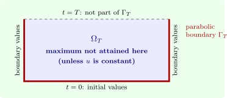

6.2 The maximum principle
Let \(\Omega \subset \mathbb R^n\) be bounded and open, \(T > 0\), and \(\Omega _T = \Omega \times (0, T]\). The parabolic boundary \(\Gamma _T\) consists of the bottom \(\overline \Omega \times \{0\}\) and the sides \(\partial \Omega \times [0, T]\); it is the part of the boundary where data are given (Figure 9).
Theorem 6.2.1 (Weak maximum principle). Let \(u\) be continuous on \(\overline {\Omega _T}\), with \(u_t\) and the second \(x\)-derivatives continuous in \(\Omega _T\), and \(u_t \leq \kappa \Delta u\) there. Then \[ \max _{\overline {\Omega _T}}u = \max _{\Gamma _T}u . \]
Proof. Let \(v = u + \varepsilon |x|^2\) with \(\varepsilon > 0\). Then \(v_t - \kappa \Delta v \leq -2n\kappa \varepsilon < 0\) in \(\Omega _T\). Suppose the maximum of \(v\) over the compact set \(\overline {\Omega _T}\) is attained at \((x_0, t_0) \in \Omega _T\). Since \(x_0\) is an interior point of \(\Omega \) and \(v(\cdot , t_0)\) has a maximum there, \(\Delta v(x_0, t_0) \leq 0\). In \(t\), either \(t_0 < T\) and \(v_t = 0\), or \(t_0 = T\) and the maximum over \(t \leq T\) is at the right end, so \(v_t \geq 0\). Either way \(v_t - \kappa \Delta v \geq 0\) at \((x_0, t_0)\), a contradiction. So \(\max v\) is attained on \(\Gamma _T\), and with \(D = \max _{\overline \Omega }|x|\), \[ \max _{\overline {\Omega _T}}u \leq \max _{\overline {\Omega _T}}v = \max _{\Gamma _T}v \leq \max _{\Gamma _T}u + \varepsilon D^2 . \] Let \(\varepsilon \to 0\). □

Applied to \(-u\), the theorem gives a minimum principle, and together they give the basic properties of the initial–boundary value problem \[ u_t = \kappa \Delta u + F \text { in } \Omega _T, \qquad u = g \text { on } \Gamma _T . \]
- Uniqueness: the difference \(w\) of two solutions solves the homogeneous equation with \(w = 0\) on \(\Gamma _T\), so \(\max |w| = 0\).
- Stability: if \(u_1\) and \(u_2\) solve the problem with data \(g_1\) and \(g_2\), then \(\max _{\overline {\Omega _T}}|u_1 - u_2| \leq \max _{\Gamma _T}|g_1 - g_2|\). Small errors in the data cause small errors in the solution, uniformly for all time.
- Comparison: if \(u_t - \kappa \Delta u \leq v_t - \kappa \Delta v\) in \(\Omega _T\) and \(u \leq v\) on \(\Gamma _T\), then \(u \leq v\) throughout. This is the tool for bounding solutions without solving for them (Problem 6.5.2).
The strong maximum principle (Nirenberg, 1953) says more: if \(\Omega \) is connected and \(u\) attains its maximum at an interior point \((x_0, t_0)\), then \(u\) is constant on \(\Omega \times [0, t_0]\). A hot spot cannot persist in the interior; heat always flows away from it.
Uniqueness also follows from energy: if \(u_t = \kappa \Delta u\) in \(\Omega \) with \(u = 0\) on \(\partial \Omega \), then \[ \frac {d}{dt}\int _\Omega u^2\,dx = 2\kappa \int _\Omega u\Delta u\,dx = -2\kappa \int _\Omega |\nabla u|^2\,dx \leq 0 , \] by Green’s identity, so the \(L^2\) norm of the difference of two solutions can only decrease from its initial value \(0\).
On all of \(\mathbb R^n\) the situation is subtler. Tychonoff (1935) constructed a non-zero solution of \(u_t = u_{xx}\) with \(u(x, 0) = 0\), growing like \(e^{c|x|^{2 + \varepsilon }}\); uniqueness holds in the class \(|u| \leq Ae^{a|x|^2}\), by a maximum principle on growing balls, and Widder (1944) proved that non-negative solutions are unique. Physically meaningful temperatures are bounded, and for them Theorem 6.1.1 gives the only solution.
Questions on this section
Stuck on something here? Ask below and it stays attached to this topic.